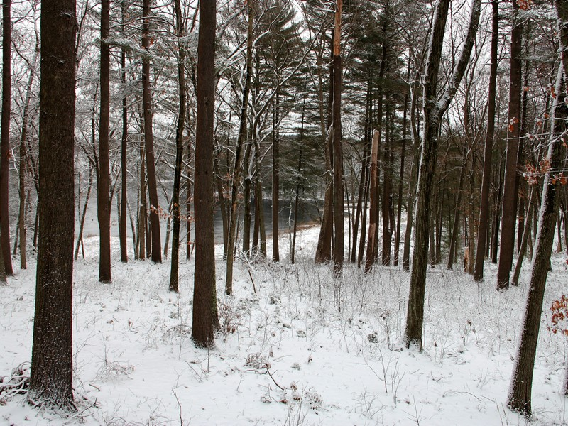

Sakowich Reservation
Features:
Overlooking Baker’s Meadow, this reservation provides access to the pond and the Baker’s Meadow Reservation trails from Oriole Drive. It encompasses a wooded knoll with mixed hardwood and pine.
History:
This land was developed as a subdivision in 1957. Gladys and Tony Sakowich purchased eight house lots and built a home in the middle of them in 1961.
In 2011, they generously donated their nine acre house lot at the northwest corner of the pond to AVIS. As part of the agreement, AVIS demolished the house and restored the site to the original contours. The blacktop driveway was removed to aid rainwater absorption.

Size:
9 acres
Location:
On Oriole Drive at the bend between Numbers 22 and 36 extending to the pond.
Parking:
On street parking along Oriole Drive.
Warden Information:
Rick & Loriann Davidsen
(978) 475-2901
ricknloriann@yahoo.com